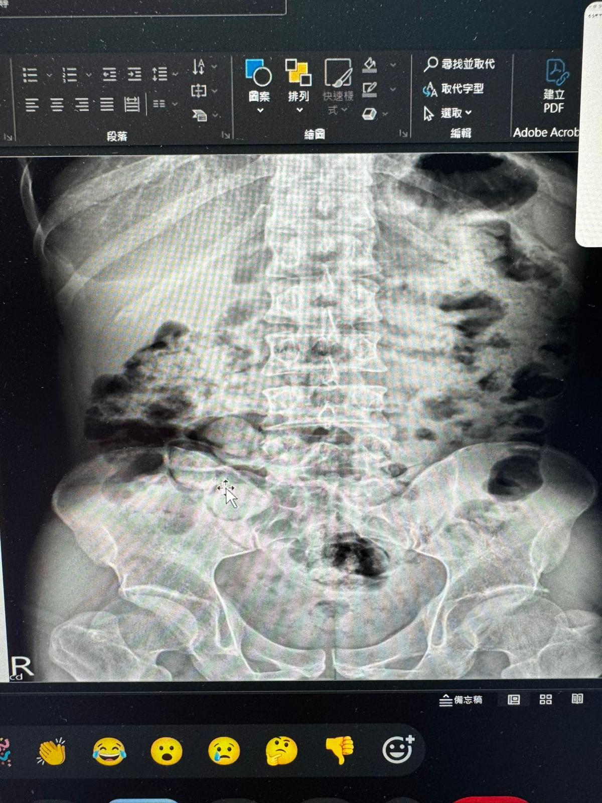

今天的讀書會真的太讚了🤩🤩🤩 視野全展開，剛學完的內臟鬆弛術可以用的方向又更多了…
今天的讀書會真的太讚了🤩🤩🤩 視野全展開，剛學完的內臟鬆弛術可以用的方向又更多了！
慢性腹痛，反覆經痛，膀胱痛，頻尿⋯⋯
而且還可以學到怎麼配合KUB判讀，真的太超值！
X光KUB 配合上 布拉格內臟鬆弛術 實在太猛啦！！！ 🤩🤩🤩🤩🤩🤩
施醫師真的太猛！

中醫徒手・內針傷整合・精準全人醫療
今天的讀書會真的太讚了🤩🤩🤩 視野全展開，剛學完的內臟鬆弛術可以用的方向又更多了！
慢性腹痛，反覆經痛，膀胱痛，頻尿⋯⋯
而且還可以學到怎麼配合KUB判讀，真的太超值！
X光KUB 配合上 布拉格內臟鬆弛術 實在太猛啦！！！ 🤩🤩🤩🤩🤩🤩
施醫師真的太猛！

有類似的困擾想諮詢？